learninspy.core package¶
Éste es el módulo principal o el núcleo del framework, y contiene clases relacionadas con la construcción de redes neuronales profundas, desde el diseño de la arquitectura hasta la optimización del desempeño en las tareas asignadas.
Submódulos¶
learninspy.core.activations¶
En este módulo se pueden configurar las funciones de activación que se deseen. Para ello, simplemente se codifica tanto la función como su derivada analítica (o aproximación, como en el caso de la ReLU), y luego se insertan en los diccionarios de funciones correspondientes, que se encuentran al final del script, con una key común que identifique la activación.
- learninspy.core.activations.identity(x)¶
Identidad
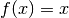
- learninspy.core.activations.identity_d(x)¶
Derivada de Identidad

- learninspy.core.activations.lecunn_sigmoid(x)¶
Sigmoidea recomendada por LeCunn
http://yann.lecun.com/exdb/publis/pdf/lecun-89.pdf
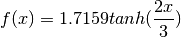
- learninspy.core.activations.lecunn_sigmoid_d(x)¶
Derivada de Sigmoidea recomendada por LeCunn
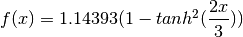
- learninspy.core.activations.lrelu(x)¶
Leaky ReLU
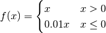
- learninspy.core.activations.lrelu_d(x)¶
Derivada de Leaky ReLU
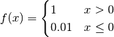
- learninspy.core.activations.relu(x)¶
Rectifier Linear Unit (ReLU)
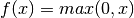
- learninspy.core.activations.relu_d(x)¶
Derivada de ReLU
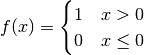
- learninspy.core.activations.sigmoid(x)¶
Sigmoidea
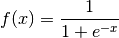
- learninspy.core.activations.sigmoid_d(x)¶
Derivada de Sigmoidea
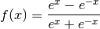
- learninspy.core.activations.softplus(x)¶
Softplus
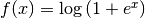
- learninspy.core.activations.softplus_d(x)¶
Derivada de Softplus
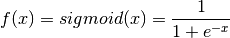
- learninspy.core.activations.tanh(x)¶
Tangente Hiperbolica
- learninspy.core.activations.tanh_d(x)¶
Derivada de Tangente Hiperbolica
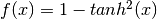
learninspy.core.autoencoder¶
- class learninspy.core.autoencoder.AutoEncoder(params=None, list_layers=None, dropout_in=0.0)¶
Clases base: learninspy.core.model.NeuralNetwork
Tipo de red neuronal, compuesto de una capa de entrada, una oculta, y una de salida. Las unidades en la capa de entrada y la de salida son iguales, y en la capa oculta se entrena una representación de la entrada en distinta dimensión, mediante aprendizaje no supervisado y backpropagation.. A las conexiones entre la capa de entrada y la oculta se le denominan encoder, y a las de la oculta a la salida se les llama decoder.
Para más información, ver http://ufldl.stanford.edu/wiki/index.php/Autoencoders_and_Sparsity
Parámetros: - params – model.NeuralNetworkParameters, donde se especifica la configuración de la red.
- list_layers – list de model.NeuralLayer, en caso de usar capas ya inicializadas.
- dropout_in – radio de DropOut usado para el encoder (el decoder no debe sufrir DropOut).
>>> ae_params = NetworkParameters(units_layers=[5,3,5], activation='Tanh', dropout_ratios=None, classification=False) >>> ae = AutoEncoder(ae_params)
- assert_regression()¶
Se asegura que el decoder corresponda a una capa de regresión (que sea del tipo model.RegressionLayer).
- encode(x)¶
Codifica la entrada x, transformando los datos al pasarlos por el encoder.
- encoder_layer()¶
Devuelve la capa de encoder.
- evaluate(data, predictions=False)¶
Evalúa AutoEncoder sobre un conjunto de datos. Se utiliza 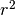 como métrica en la evaluación.
Parámetros: - data – list de LabeledPoint
- predictions – si es True, retorna las predicciones (salida del AutoEncoder)
Devuelve: resultado de evaluación, y predicciones si se solicita en predictions
- class learninspy.core.autoencoder.StackedAutoencoder(params, list_layers=None, dropout=None)¶
Clases base: learninspy.core.model.NeuralNetwork
Estructura de red neuronal profunda, donde los pesos de cada capa son inicializados con los datos de entrenamiento mediante autoencoders.
Para más información, ver http://ufldl.stanford.edu/wiki/index.php/Stacked_Autoencoders
Parámetros: - params – model.NeuralNetworkParameters, donde se especifica la configuración de la red.
- list_layers – list de model.NeuralLayer, en caso de usar capas ya inicializadas.
- dropout – radio de DropOut a utilizar en el encoder de cada AutoEncoder.
- finetune(train, valid, criterions=None, mini_batch=50, parallelism=4, optimizer_params=None, keep_best=False)¶
- fit(train, valid=None, stops=None, mini_batch=50, parallelism=4, optimizer_params=None, keep_best=False)¶
Fit de cada autoencoder usando conjuntos de entrenamiento y validación, y su apilado para entrenar la red neuronal profunda con aprendizaje no supervisado. Se especifica además cómo debe realizarse la optimización, mediante los parámetros explicados en el método fit() de NeuralNetwork.
Parámetros: - train –
- valid –
- stops –
- mini_batch –
- parallelism –
- optimizer_params –
- keep_best –
Devuelve:
- predict(x)¶
learninspy.core.loss¶
En este módulo se proveen dos funciones de costo populares, cuyo uso se corresponde a la tarea designada para el modelo:
- Clasificación: Entropía Cruzada (en inglés, Cross Entropy o CE),
- Regresión: Error Cuadrático Medio (en inglés, Mean Squared Error o MSE).
- learninspy.core.loss.cross_entropy(o, t)¶
Función de entropía cruzada.
Parámetros: - o – list, correspondiente a la salida real.
- t – list, correspondiente a la salida esperada.
Devuelve: float, error de clasificación.
Nota
el vector o debe ser la salida de la función softmax()
- learninspy.core.loss.cross_entropy_d(o, t)¶
Derivada de la función CE.
Parámetros: - o – list, correspondiente a la salida real.
- t – list, correspondiente a la salida esperada.
Devuelve: list, derivada de la función de error.
Nota
el vector o debe ser la salida de la función softmax()
- learninspy.core.loss.mse(o, t)¶
Función de error cuadrático medio. Ver más info en Mean squared error
Parámetros: - o – list, correspondiente a la salida real.
- t – list, correspondiente a la salida esperada.
Devuelve: float, error de clasificación.
- learninspy.core.loss.mse_d(o, t)¶
Derivada de la función MSE.
Parámetros: - o – list, correspondiente a la salida real.
- t – list, correspondiente a la salida esperada.
Devuelve: list, derivada de la función de error.
learninspy.core.model¶
- class learninspy.core.model.ClassificationLayer(n_in=2, n_out=2, activation='ReLU', distributed=False, w=None, b=None, sparsity=False, rng=None)¶
Clases base: learninspy.core.model.NeuralLayer
Clase correspondiente a la capa de salida en una red neuronal con tareas de clasificación. Se distingue de una RegressionLayer en que para realizar la clasificación se define que la activación se de por la función softmax.
- dropoutput(x, p, grad=False)¶
Advertencia
No se debe aplicar Dropout en la capa de salida de una red neuronal, por lo cual este método arroja un error de excepción.
- output(x, grad=False)¶
- class learninspy.core.model.NetworkParameters(units_layers, activation='ReLU', layer_distributed=None, dropout_ratios=None, classification=True, strength_l1=1e-05, strength_l2=0.0001, seed=123)¶
Clase utilizada para especificar todos los parámetros necesarios para configurar una red neuronal
Parámetros: - units_layers – list of ints, donde cada valor indica la cantidad de unidades que posee la respectiva capa. La cantidad de valores de la lista indica el total de capas que va a tener la red (entrada + ocultas + salida).
- activation – string or list of strings, indicando la key de la/s activación/es a utilizar en las capas de la red neuronal.
- layer_distributed – list of bools, indicando por cada capa si sus neuronas van a representarse o no por arreglos distribuidos (no tiene efecto en este release).
- dropout_ratios – list of floats, indicando el valor de p para aplicar Dropout en cada respectiva capa.
- classification – bool, es True si la tarea de la red es de clasificación y False si es de regresión.
- strength_l1 – float, ratio de Norma L1 a aplicar en todas las capas.
- strength_l2 – float, ratio de Norma L2 a aplicar en todas las capas.
- seed – int, semilla que alimenta al generador de números aleatorios numpy.random.RandomState utilizado por la red.
- class learninspy.core.model.NeuralLayer(n_in=2, n_out=2, activation='ReLU', distributed=False, w=None, b=None, sparsity=False, rng=None)¶
Clases base: object
Clase básica para modelar una capa de neuronas que compone una red neuronal. Contiene sus “neuronas” representadas por pesos sinápticos w y b, además de una función de activación asociada para dichos pesos.
Una correcta inicialización de los pesos sinápticos está muy ligada a la función de activación elegida. Por defecto, los pesos sinápticos se inicializan con una distribución uniforme con media
 y varianza 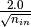,
lo cual da buenos resultados especialmente usando ReLUs.
Para la función Tanh se muestrea sobre una distribución uniforme
en el rango 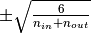, y para la Sigmoid en el rango
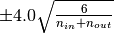.
y varianza 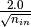,
lo cual da buenos resultados especialmente usando ReLUs.
Para la función Tanh se muestrea sobre una distribución uniforme
en el rango 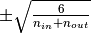, y para la Sigmoid en el rango
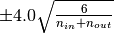.Parámetros: - n_in – int, dimensión de la entrada.
- n_out – int, dimensión de la salida.
- activation – string, key de la función de activación asignada a la capa.
- distribute – si es True, indica que se utilicen arreglos distribuidos para w y b.
- w – LocalNeurons, matriz de pesos sinápticos.
- b – LocalNeurons, vector de pesos bias.
- sparsity – si es True, los arreglos se almacenan en formato scipy.sparse.csr_matrix.
- rng – si es None, se crea un generador de números aleatorios mediante una instancia numpy.random.RandomState.
Nota
el parámetro distribute no tiene efecto, ya que el uso de arreglos distribuidos se deja para un próximo release.
- dropoutput(x, p, grad=False)¶
Salida de la capa neuronal, luego de aplicar la regularización de los pesos sinápticos por Dropout.
http://www.cs.toronto.edu/~rsalakhu/papers/srivastava14a.pdf
Parámetros: - x – numpy.array, vector de entrada
- p – float, tal que

- grad – Si es True, se retorna además el gradiente de la salida.
Devuelve: numpy.array, o tupla de ellos si grad es True.
Nota
En las predicciones de la red no se debe efectuar Dropout.
- get_bias()¶
Se devuelve el vector de bias b.
Devuelve: numpy.array.
- get_weights()¶
Se devuelve la matriz de pesos sinápticos w.
Devuelve: numpy.array.
- l1()¶
Norma L1 sobre la matriz w de pesos sinápticos. :return: float, resultado de aplicar norma.
- l2()¶
Norma L2 sobre la matriz w de pesos sinápticos. :return: float, resultado de aplicar norma.
- output(x, grad=False)¶
Salida de la capa neuronal. Se toma una entrada 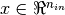, se pondera con los pesos sinápticos W y el bias b, y luego se aplica la función de activación f para retornar el resultado 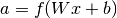.
Parámetros: - x – numpy.array, vector de entrada
- grad – Si es True, se retorna además el gradiente de la salida.
Devuelve: numpy.array, o tupla de ellos si grad es True.
- update(step_w, step_b)¶
Se actualizan los arreglos w y b sumando respectivamente los incrementos recibidos por parámetros.
Parámetros: - step_w – LocalNeurons
- step_b – LocalNeurons
- class learninspy.core.model.NeuralNetwork(params, list_layers=None)¶
Clase para modelar una red neuronal. La misma soporta funcionalidades para configuración y diseño, y para la optimización y testeo sobre un conjunto de datos cargado. Además ofrece funciones para cargar y guardar un modelo entrenado.
Parámetros: - params – NetworkParameters, parámetros que configuran la red.
- list_layers – list of NruralLayer, en caso de que se utilicen capas de neuronas ya creadas.
Devuelve: - check_gradients()¶
- check_stop(epochs, criterions, check_all=False)¶
- cost(features, label)¶
- evaluate(data, predictions=False)¶
Parámetros: - data –
- predictions – bool, for returning predictions too
Devuelve:
- fit(train, valid=None, stops=None, mini_batch=50, parallelism=4, optimizer_params=None, keep_best=False)¶
- l1()¶
- l2()¶
- load(name, path)¶
- persist_layers()¶
- predict(x)¶
- save(name, path)¶
- train(train_bc, mini_batch=50, parallelism=4, optimizer_params=None)¶
Parámetros: - train_bc –
- mini_batch –
- parallelism –
- optimizer_params –
Devuelve:
- unpersist_layers()¶
- update(stepw, stepb)¶
- class learninspy.core.model.RegressionLayer(n_in=2, n_out=2, activation='ReLU', distributed=False, w=None, b=None, sparsity=False, rng=None)¶
Clases base: learninspy.core.model.NeuralLayer
Clase correspondiente a la capa de salida en una red neuronal con tareas de regresión, utilizando la función de activación como salida de la red.
Nota
No es recomendado utilizar Dropout en las capas de una red neuronal con tareas de regresión.
- dropoutput(x, p, grad=False)¶
Advertencia
No se debe aplicar Dropout en la capa de salida de una red neuronal, por lo cual este método arroja un error de excepción.
learninspy.core.neurons¶
- class learninspy.core.neurons.LocalNeurons(mat, shape)¶
Clases base: object
Clase principal para representar los pesos sinápticos W de una red neuronal, y el bias b. Provee funcionalidades algebraicas para operar matrices y vectores, así como también normas regularizadoras y la aplicación de funciónes de activación. No obstante, esta clase es usada directamente por NeuralLayer, por lo cual no es herramienta de libre utilidad.
Nota
Es preciso aclarar que su estructuración se debe a que está pensada para ser compatible con su par DistributedNeurons, pero que en esta versión se encuentra inhabilitada.
Parámetros: - mat – numpy.array o list o pyspark.rdd.PipelinedRDD, que corresponde a la matriz W o vector b a alojar y operar.
- shape – tuple, que corresponde a la dimensión que debe tener mat. Útil sólo cuando se utilizan arreglos distribuidos.
>>> shape = (5,3) >>> w = np.asarray(np.random.uniform(low=-np.sqrt(6.0 / (shape[0] + shape[1])), high=+np.sqrt(6.0 / (shape[0] + shape[1])), size=shape), dtype=np.dtype(float)) >>> weights = LocalNeurons(w, shape)
- activation(fun)¶
Aplica una función de activación sobre cada entrada del arreglo alojado.
Parámetros: fun – función soportada en activations Devuelve:
- collect()¶
Retorna el arreglo alojado. :return: np.array
- count()¶
Cantidad de elementos de la matriz almacenada. Siendo MxN las dimensiones, retorna el producto de ambas. :return: int
- dot(vec)¶
Producto punto entre vectores. Equivalente a numpy.array.dot.
Parámetros: vec – np.array o list.
- dropout(p)¶
Aplica DropOut [srivastava2014dropout] sobre el vector alojado, anulando sus elementos con una probabilidad p.
Parámetros: p – float, tal que [srivastava2014dropout] Srivastava, N., Hinton, G., Krizhevsky, A., Sutskever, I., & Salakhutdinov, R. (2014): “Dropout: A simple way to prevent neural networks from overfitting”. The Journal of Machine Learning Research, 15(1), 1929-1958.
- l1()¶
Norma L1 sobre la matriz almacenada. Se retorna una tupla con el resultado y además el gradiente de dicha norma. :return: tuple de float y LocalNeurons
- l2()¶
Norma L1 sobre la matriz almacenada. Se retorna una tupla con el resultado y además el gradiente de dicha norma. :return: tuple de float y LocalNeurons
- loss(fun, y)¶
Aplica una función de error entre el vector almacenado y el vector y.
Parámetros: - fun – función soportada en loss
- y – list o np.array
Devuelve: float
- loss_d(fun, y)¶
Aplica una función derivada de error entre el vector almacenado y el vector y.
Parámetros: - fun – función derivada soportada en loss
- y – list o np.array
Devuelve: LocalNeurons
- mul_array(array)¶
- mul_elemwise(array)¶
Producto elemento a elemento con array. Equivalente a llamar a numpy.multiply de dos arreglos.
Parámetros: array – LocalNeurons o np.array, de la misma dimensión que el arreglo alojado en la instancia.
- outer(array)¶
- shape¶
Dimensiones del arreglo alojado. :return: tuple
- softmax()¶
Aplica la función Softmax sobre el vector alojado.
- sum()¶
Suma de todos los elementos del arreglo alojado.
- sum_array(array)¶
Suma elemento a elemento con array.
Parámetros: array – LocalNeurons o np.array, de la misma dimensión que el arreglo alojado en la instancia.
- transpose()¶
Transpone el arreglo alojado en la instancia. Equivale a numpy.array.transpose().
learninspy.core.optimization¶
Este módulo se realizó en base al excelente package de optimización climin , de donde se adaptaron algunos algoritmos de optimización para su uso en redes neuronales.
Nota
Proximamente se migrará a un package optimization, separando por scripts los algoritmos de optimización.
- class learninspy.core.optimization.Adadelta(model, data, parameters=None)¶
Clases base: learninspy.core.optimization.Optimizer
- class learninspy.core.optimization.GD(model, data, parameters=None)¶
Clases base: learninspy.core.optimization.Optimizer
- class learninspy.core.optimization.Optimizer(model, data, parameters=None)¶
Clases base: object
- check_stop(check_all=False)¶
- results()¶
- class learninspy.core.optimization.OptimizerParameters(algorithm='Adadelta', options=None, stops=None, merge_criter='w_avg', merge_goal='hits')¶
- learninspy.core.optimization.merge_models(results_rdd, criter='w_avg', goal='hits')¶
Funcion para hacer merge de modelos, en base a un criterio de ponderacion sobre un valor objetivo :param results_rdd: :param criter: :param goal: :return:
- learninspy.core.optimization.mix_models(left, right)¶
Se devuelve el resultado de sumar las NeuralLayers de left y right :param left: list of NeuralLayer :param right: list of NeuralLayer :return: list of NeuralLayer
- learninspy.core.optimization.optimize(model, data, params=None, mini_batch=50, seed=123)¶
learninspy.core.search¶
learninspy.core.stops¶
- class learninspy.core.stops.AchieveTolerance(tolerance, key='hits')¶
Clases base: object
- class learninspy.core.stops.MaxIterations(max_iter)¶
Clases base: object
- class learninspy.core.stops.ModuloNIterations(n)¶
Clases base: object
- class learninspy.core.stops.NotBetterThanAfter(minimal, after, key='hits')¶
Clases base: object
- learninspy.core.stops.OnSignal¶
alias de OnUnixSignal
- class learninspy.core.stops.OnUnixSignal(sig=2)¶
Clases base: object
Stopping criterion that is sensitive to some signal.
- handler(signal, frame)¶
- class learninspy.core.stops.OnWindowsSignal(sig=None)¶
Clases base: object
Stopping criterion that is sensitive to signals Ctrl-C or Ctrl-Break on Windows.
- handler(ctrl_type)¶
- class learninspy.core.stops.Patience(initial, key='hits', grow_factor=1.0, grow_offset=0.0, threshold=0.05)¶
Clases base: object
- class learninspy.core.stops.TimeElapsed(sec)¶
Clases base: object